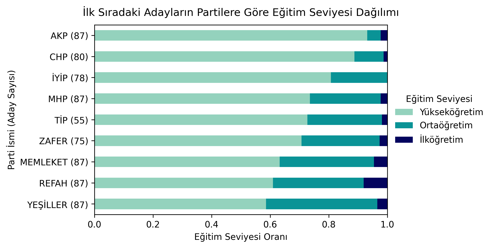
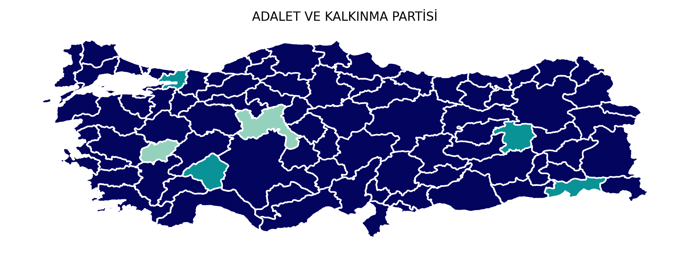
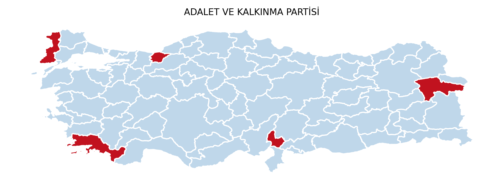
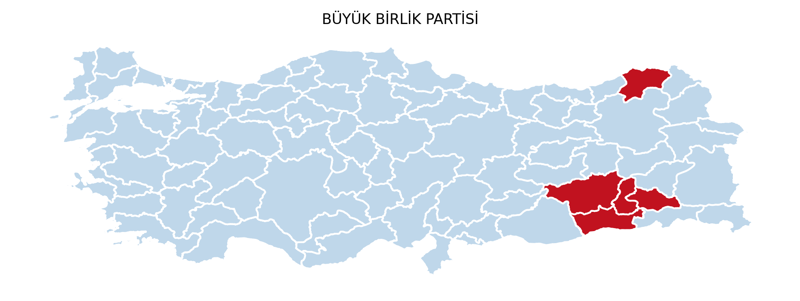
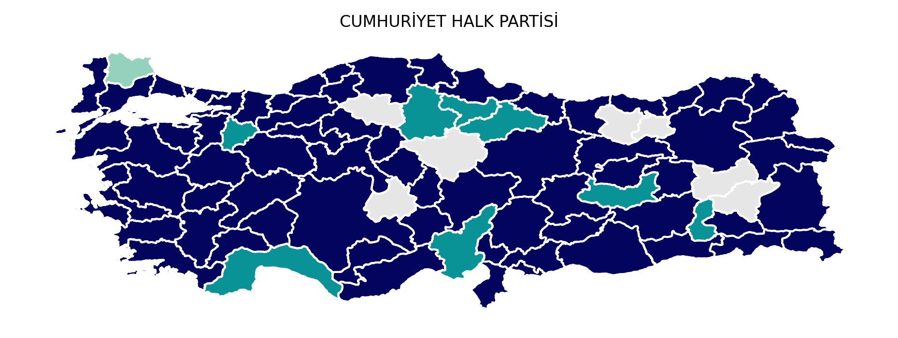
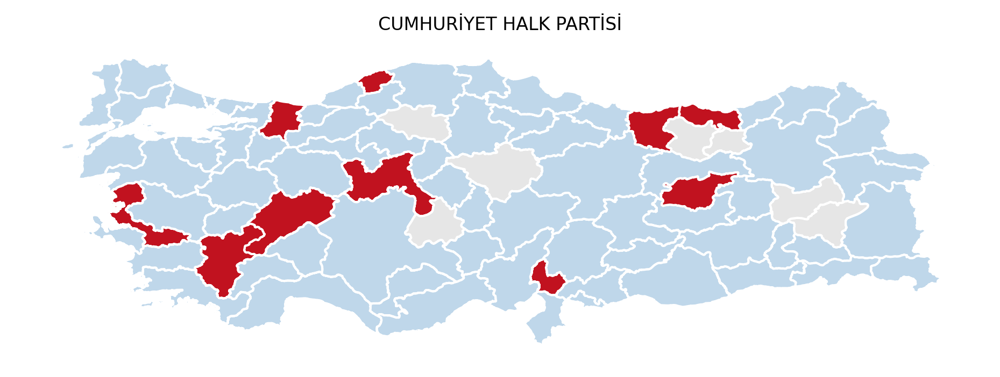
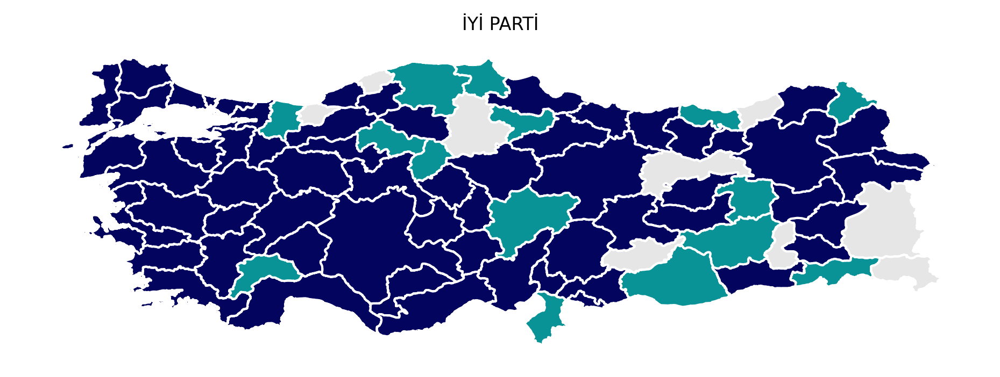
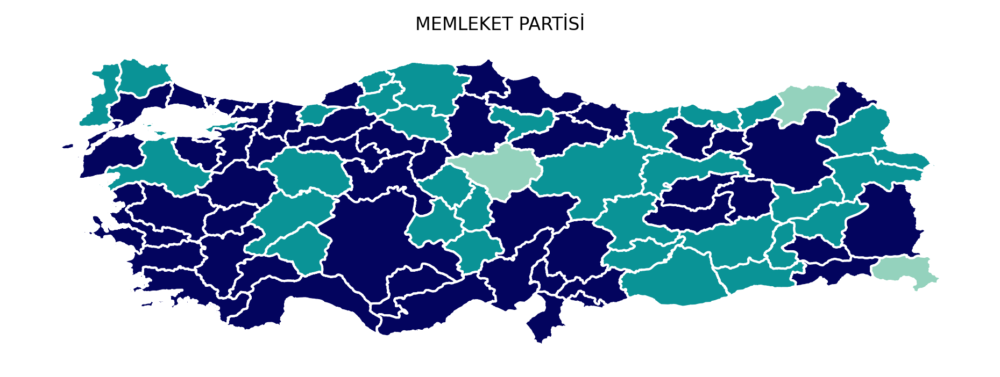
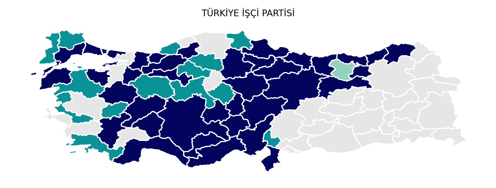
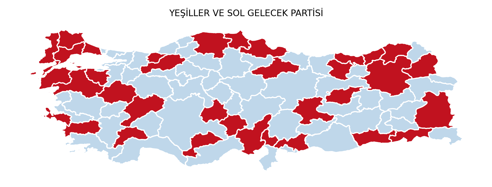

Milletvekili adaylarının partilere göre eğitim ve cinsiyet dağılımı analizi
14 Mayıs genel seçimlerinde yarışacak milletvekili adayları hakkında hazırladığımız bu yazıda, aday profillerini detaylı bir şekilde ele alacağız. Yüksek Seçim Kurulu'ndan elde ettiğimiz verilere göre; meslek, sıra numarası ve cinsiyet gibi faktörlerle partilerin aday seçimindeki stratejilerini ve farklılıklarını inceleyeceğiz. Sağ ve sol partiler arasındaki farklılıklar, kadın aday sayısı ve temsil oranları gibi önemli konu başlıkları, aday profillerinin parlamentoyu nasıl şekillendirdiği hakkında değerli ipuçları sunacaktır.
Adayların Öğrenim Durumu
Adayların öğrenim durumu hem mevcut iktidarın eğitim-öğretim diskurunun ne kadar tutarlı olduğunu, hem de partiler arasındaki farkları ortaya koyması açısından önemlidir. Aday sayılarına baktığımızda, sırasıyla AKP, CHP ve İyi Parti’nin daha yüksek tahsilli üyelerini aday gösterdiği görülmektedir. Siyasi partilerin ulusal düzeyde farklı sayıda aday gösterdiğini hesaba kattığımızda, aslinda her partinin kendi içindeki yüksek tahsil oranına bakmak daha faydalı olacaktır.

Figür 1: Adayların öğrenim seviyelerinin karşılaştırılması
Ayrıca belirtmek gerekir ki, AKP listeleri Hüda-Par gibi partileri de içerirken, CHP listelerinde ise DEVA, Gelecek ve Saadet Partisi bulunmaktadır. Bu siyasi durumu ayrı ayrı değerlendirmek yerine, tek parti listeleri üzerinden genel eğilimleri ortaya koymaya çalıştık. Bununla birlikte, CHP bazı seçim bölgelerinde aday göstermediği için toplamda 581 adayı bulunmaktadır. Türkiye İşçi Partisi ve diğer bazı partilerde de benzer durumlar söz konusudur. Bu nedenle, sonraki analizlerde görüleceği üzere aday sayısından ziyade oranlar üzerinden değerlendirmeler yapmak daha doğru sonuçlar doğuracaktır.
Aday profillerinin öğrenim durumlarına göre siyasi partilere göre farklılıklar göze çarpıyor. AKP’den aday gösterilenlerin %90'dan fazlası yükseköğrenim sahibi olarak öne çıkıyor. AKP'yi ana muhalefette yer alan Millet İttifakı üyeleri CHP ve İYİ Parti takip ediyor. Öte yandan, Yeşiler ve Sol Gelecek, Yeniden Refah ve Memleket Partileri, ele aldığımız siyasi partiler arasında adayları en düşük yükseköğrenim oranına sahip olan siyasi partiler. Bu partilerin adaylarının yüzde 50'den fazlası yükseköğrenim sahibi olsa da, diğer partilere göre daha düşük bir oran olduğunu gözlemliyoruz.

Figür 2: Adayların öğrenim seviyelerinin karşılaştırılması (Normalize edilmiş)
Figür 3: Birinci sıradaki adayların öğrenim seviyelerinin karşılaştırılması (Normalize edilmiş)
Üçüncü grafikte ise birinci sırada gösterilen adayların öğrenim seviyesi karşılaştırılmaktadır. Buradan da görüleceği üzere AKP ve CHP birinci sıradan genel olarak Yüksek öğrenime sahip adayları öne çıkarmaktadır. Yeşiller ve Sol Gelecek Partisi ve Refah Partisi ise diğer partilere göre daha az oranda yüksek tahsilli adayları birinci sıradan aday göstermektedir.
Cinsiyet etkisi
Gözlemlediğimiz cinsiyet dağılım grafiğine göre, Türkiye'nin siyasi partileri arasında kadın aday sayısı ve temsil oranlarında dikkate değer farklılıklar mevcut. İktidardaki AKP'nin adaylarının yalnızca %20'si kadın iken, ana muhalefetteki CHP'nin kadın aday oranı %28. Yeşiller ve Sol Gelecek Partisi ve Türkiye İşçi Partisi, en fazla kadın adayın bulunduğu partiler olarak öne çıkıyor. Genel olarak, sol partilerde daha fazla kadın adayın yer aldığını görmekteyiz. Diğer taraftan, Cumhur İttifak’ında yer alan fakat ayrı bir liste seçimlere katılan Yeniden Refah Partisi, en düşük kadın aday oranına sahip parti olarak dikkat çekiyor. Bu verilere dayanarak, Türkiye siyasetinde kadınların temsili konusunda partiler arası önemli farklılıkların olduğunu söyleyebiliriz. Peki muhalefet ve sol partilerin çoğunluğa sahip olduğu bir senaryoda daha fazla kadın aday görecek miyiz? Bunu anlayabilmek için aşağıdaki grafiği gösteriyoruz.

Figür 4: Kadın aday oranının karşılaştırılması (Normalize edilmiş)
İncelenen verilere göre, birinci sıradan aday gösterilen kadın ve erkek oranları nezdinde, Emek ve Özgürlük İttifakı'daki kadın adayların, diğer siyasi partilere/ittifaklara kıyasla daha yüksek bir oranda birinci sıradan temsil edildiği görülmektedir. Bu partileri, Cumhuriyet Halk Partisi ve Memleket Partileri takip etmektedir. Cumhur İttifakı'nı oluşturan üç siyasi parti ise kadınların oldukça düşük oranda birinci sıradan aday gösterildiği bir tablo sergilemektedir. Yalnızca kadın adayların sayısına değil, aynı zamanda kadın adayların sıralamalarına da dikkat edilmesi, cinsiyet eşitliği perspektifinden politikaların daha belirgin hale gelmesine olanak tanımaktadır. Bu durum, partilerin eşitlikçi bir yaklaşıma ne ölçüde önem atfettiğine dair ipuçları verebilir.

Figür 5: Birinci sıradan aday gösterilen kadın oranının karşılaştırılması (Normalize edilmiş)
Sonuç itibariyle, öğrenim durumu, cinsiyet ve sıralamalar üzerinden gerçekleştirdiğimiz bu kısa analizle, meclis aritmetiği hakkındaki tartışmalara farklı bir boyut kazandırmayı hedefledik. Özellikle cinsiyet eşitliği bağlamında genel tablonun oldukça iyimser olmadığını belirtmekte fayda var. Örneğin, İYİ Parti'nin %28 oranında kadın aday göstermesine karşın, birinci sıradaki kadın aday oranı sadece %12 olarak görülmektedir. AKP ve diğer sağ partilerle de benzer bir durum söz konusudur. Dolayısıyla, sadece kadın aday sayıları değil, liste başında seçilebilir konumda olan adayların sayısı da önem arz etmektedir. Bu bağlamda, Emek ve Özgürlük İttifakı ve sol partiler cinsiyet eşitliğine daha fazla önem vermekle birlikte, kadın aday oranı ve birinci sıradan seçilebilecek kadın aday oranı arasında önemli bir farklılık bulunmamaktadır.
Eğitim durumu daha ilginç eğilimlere işaret etmektedir. AKP daha fazla sayıda yüksek eğitime sahip aday sayısına sahip olmakla birlikte, onu izleyen CHP ve İYİ Parti, diğer partilere kıyasla daha fazla yüksek öğrenimli aday bulundurmaktadır. Memleket, Yeniden Refah, Yeşiller ve Sol Gelecek Partisi ise diğer partilere göre daha az sayıda ve oranda öğrenimli aday bulundurmaktadır.
Bölgesel Eğilimler
Öğrenim durumu ve cinsiyetle ilgili analizlerin daha açık bir şekilde harita üzerinde görselleştirilmesi, aday seçim süreçlerinde bu özelliklerin bölgesel farklılıklar sergileyip sergilemediğini anlamak açısından önem taşımaktadır. Siyasi partiler, seçmen davranışlarına göre belirli niteliklere sahip adayları farklı bölgelerden temsilci olarak belirleyebilirler. Kimi siyasi partiler bölgesel farklılık sergilememekle birlikte, diğerleri cinsiyet ve öğrenim durumu açısından farklı stratejiler belirleyebilirler. Örneğin, AKP'nin birinci sıradaki adaylarının büyük çoğunluğu yüksek öğrenimli olmasına rağmen, bu durum coğrafi açıdan bir değişkenlik göstermemektedir. Fakat doğuya doğru gittikçe, Milliyetçi Hareket Partisi’nin birinci sıra adaylarının öğrenim düzeyi düşmektedir. Cumhur İttifakı içerisinde birinci sıradan gösterilen kadın adayların sayısı halihazırda düşük olduğundan harita üzerinden bölgesel bir trend izlemek mümkün değil.
Tablo 1: CUMHUR ittifakı partilerinin illere göre ilk adaylarının öğrenim durumu (İLK, ORTA, YÜKSEK) ve cinsiyet (KADIN, ERKEK)dağılımı.
|  |  |
 |
|
|  | |
Aşağıdaki ikinci tabloda ise benzer bir analizi Millet İttifakı ve üçüncü tablodaki görsellerde diğer bağımsız parti/ittifaklar için gösterebiliriz. Birinci sıradaki adayları incelediğimizde eğitim seviyesinin bölgesel dağılımı CHP ve İYİ Parti için benzer ve homojen bir görünüm sergilemektedir. Memleket Partisi’nin ise yüksek öğrenime sahip adayları daha çok batıdan birinci sıradan aday gösterdiğini görebiliyoruz. YSP’nin ise birinci sırada adaylarının bölgesel dağılımı homojen bir görünüme sahip. Cinsiyet nezdinde birinci sırada adaylara baktığımızda, CHP’nin birinci sıradaki kadın adayları genel olarak Türkiye’nin batısında aday gösterdiğini gözlemliyoruz. Doğuya doğru gidildikçe kadın adayları yine görmekle birlikte sıklığı azalmaktadır. TİP ve Yeşiller Sol ise birinci sıradaki kadın adayların bölgesel dağılımı daha homojen bir görünüm çizmektedir.
Tablo 2: MILLET ittifakı partilerinin illere göre ilk adaylarının öğrenim durumu (İLK, ORTA, YÜKSEK) ve cinsiyet (KADIN, ERKEK)dağılımı.
|  |  |
|  |
Tablo 3: Diğer bazı partilerin illere göre ilk adaylarının öğrenim durumu (İLK, ORTA, YÜKSEK) ve cinsiyet (KADIN, ERKEK)dağılımı.
|  | |
|  | |
|  |
14 Mayıs Parlamento ve Başkanlık Seçimleri öncesinde, aday profillerinin öğrenim durumu, cinsiyet ve sıralamalar üzerinden yaptığımız analize göre partilerin aday öncelikleri kısmen tespit edebiliyoruz. AKP, CHP ve İYİ Parti, yüksek öğrenimli adaylara öncelik verirken, sol partilerde kadın aday sayısı ve temsil oranları belirgin oranda daha yüksek. Analizimizi biraz daha derinleştirmek için birinci sıradan gösterilen adayların öğrenim durumu ve cinsiyet eşitliği açısından coğrafi dağılımını da inceledik. Bölgesel eğilimler incelendiğinde, az sayıda bazı partilerde coğrafi değişkenlik olduğunu gördük. Özetle özellikle doğuya doğru gidildikçe, bazı partilerin kadın adaylarının oranı ve eğitim seviyeleri düştüğünü gözlemledik. Fakat bu durum birkaç siyasi parti için geçerli olmakla birlikte, genel olarak birinci sıradan gösterilen adayların eğitim durumu ve cinsiyet nezdinde bölgesel bir farklılık gözlemlemedik.
Düzeltme (28 Nisan 2023): Paylaşmış olduğumuz ilk analizde millet vekili adaylarının cinsiyet bilgileri YSK tarafından paylaşılmamış olduğundan, Türkçe isimlerin kullanımındaki rastlanen cinsiyet verilerinden çıkarım yaptık. Bazı uniseks isimler için elle düzeltmeler yapılmasına rağmen başka hatalar fark ettik ve gerekli düzeltmeleri yaptık. Ayrıca haritalarda da ilçe bazından sınırlardansa seçim bilgeleri belirten sınırları kullanarak görselleri güncelledik.